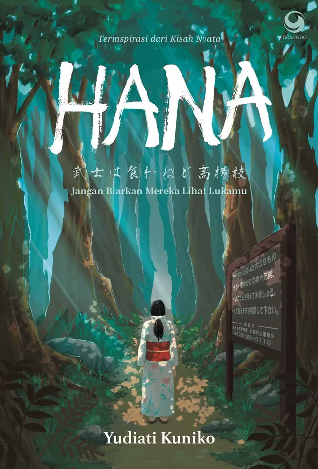
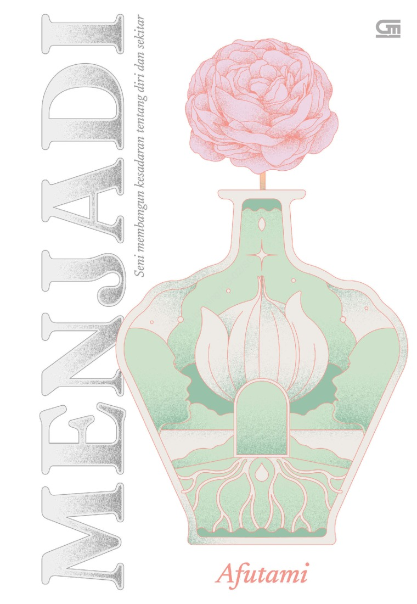
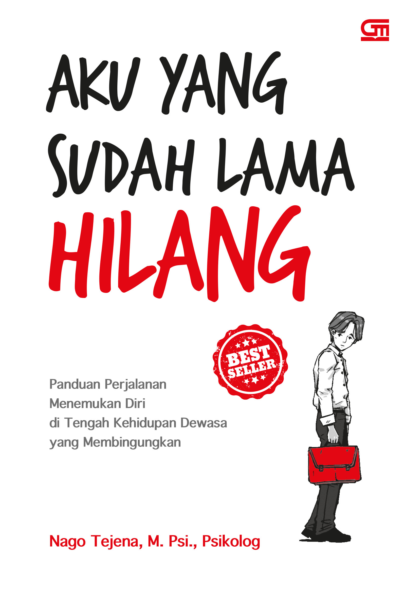
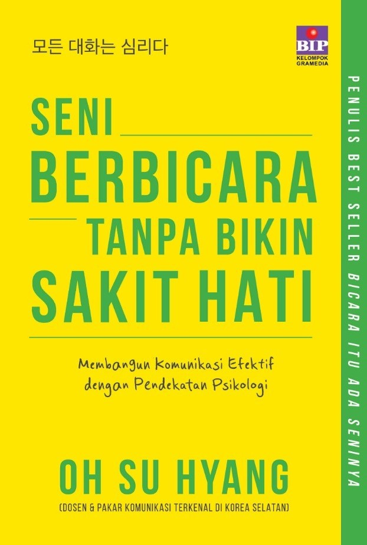
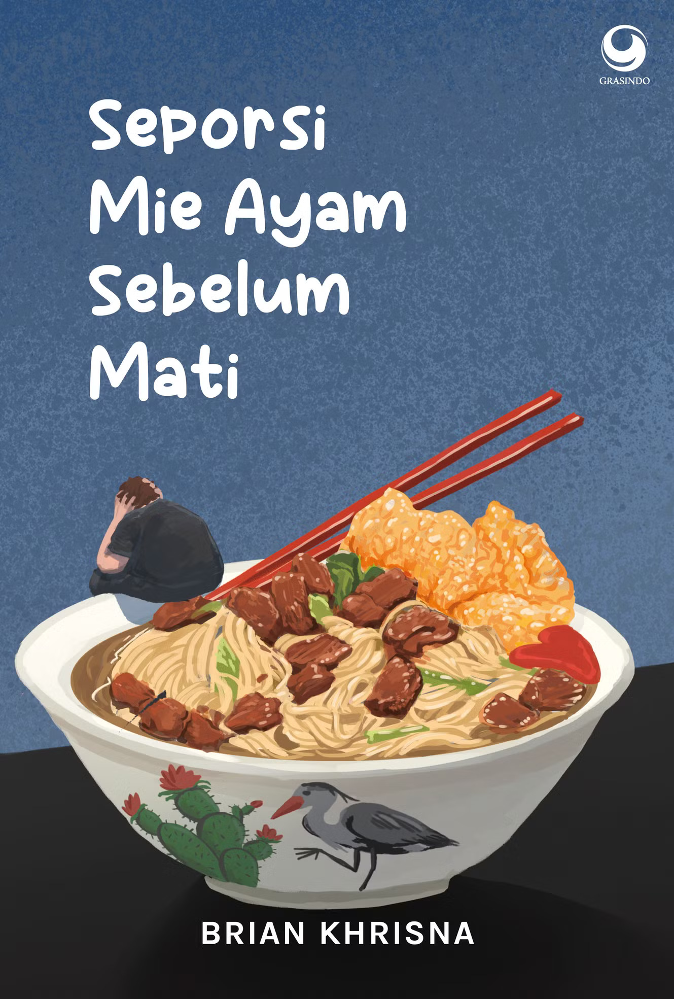

| No | Gambar | Detail Buku | Kutipan (Quotes) |
|---|---|---|---|
| 1 |  |
Hanna: Jangan Biarkan Mereka Melihat Lukamu Penulis: Yudiati Kuniko Penerbit: Grasindo Tahun: 2025 |
"Luka tidak selalu harus ditunjukkan agar orang lain mengerti seberapa sakitnya. Terkadang, menyembunyikannya adalah cara terbaik untuk menjaga sisa-sisa martabat yang kita punya." |
| 2 |  |
Menjadi: Seni Membangun Kesadaran tentang Diri dan Sekitar Penulis: Afu Utami Penerbit: Gramedia Tahun: 2025 |
"Kesadaran adalah kunci. Kita tidak bisa memperbaiki apa yang tidak kita sadari sebagai masalah." |
| 3 |  |
Aku yang sudah lama hilang Penulis: Nago Tejena Penerbit: Gramedia Tahun: 2025 |
"Diramu untuk memahami dirimu, ditulis untuk mengembalikan jiwa yang lama kamu abaikan." |
| 4 |  |
Seni Berbicara Tanpa Bikin Sakit Hati Penulis: Salsabila S. Putri Penerbit: Araska Publisher Tahun: 2025 |
"Terkadang, pendengar yang baik jauh lebih dihargai daripada pembicara yang hebat. Seni berbicara dimulai dari seni mendengarkan." |
| 5 |  |
Seporsi Mie Ayam Sebelum Mati Penulis: Sjuaibun Ilham Penerbit: Gramedia Tahun: 2025 |
"Jangan menunggu momen terakhir untuk menyadari bahwa kebahagiaan itu sebenarnya murah, hanya saja gengsi kita yang membuatnya mahal." |